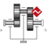
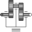

GearConstraintIdeal 3-dim. gearbox (arbitrary shaft directions) |

|
Diagram
{kind=link}
Information
This information is part of the Modelica Standard Library maintained by the Modelica Association.
This ideal massless joint provides a gear constraint between
frames frame_a and frame_b. The axes of rotation
of frame_a and frame_b may be arbitrary.
Reference
Schweiger, Christian ;
Otter, Martin:
Modelling
3D Mechanical Effects of 1-dim. Powertrains. In: Proceedings of the 3rd International
Modelica Conference. Linköping : The Modelica Association and Linköping University,
November 3-4, 2003, pp. 149-158
Parameters (7)
| ratio |
Value: Type: Real Description: Gear speed ratio |
|---|---|
| n_a |
Value: {1, 0, 0} Type: Axis Description: Axis of rotation of shaft a (same coordinates in frame_a, frame_b, bearing) |
| n_b |
Value: {1, 0, 0} Type: Axis Description: Axis of rotation of shaft b (same coordinates in frame_a, frame_b, bearing) |
| r_a |
Value: {0, 0, 0} Type: Position[3] (m) Description: Vector from frame bearing to frame_a resolved in bearing |
| r_b |
Value: {0, 0, 0} Type: Position[3] (m) Description: Vector from frame bearing to frame_b resolved in bearing |
| stateSelect |
Value: StateSelect.default Type: StateSelect Description: Priority to use joint coordinates (phi_a, phi_b, w_a, w_b) as states |
| checkTotalPower |
Value: false Type: Boolean Description: = true, if total power flowing into this component shall be determined (must be zero) |
Connectors (3)
Components (6)
| world |
Type: World |
|
|---|---|---|
| actuatedRevolute_a |
Type: Revolute |
|
| actuatedRevolute_b |
Type: Revolute |
|
|  | idealGear |
Type: IdealGear |
| fixedTranslation1 |
Type: FixedTranslation |
|
| fixedTranslation2 |
Type: FixedTranslation |
Used in Examples (1)
|
Modelica.Mechanics.MultiBody.Examples.Rotational3DEffects Demonstrate usage of GearConstraint model |